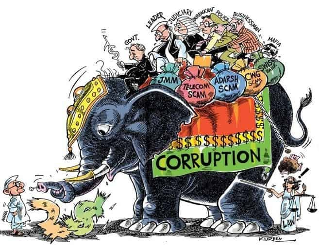
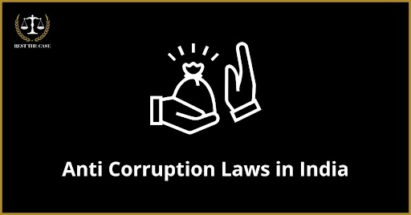

Main
The real turning point for India's culture of graft began with the commencement of economic reforms and liberalisation in 1991. While economic reforms led to the ending of licensing for industrial activities and the abolition of import quotas, thereby, removing many corrupt practices, this did not reduce graft. On the contrary, the economic reforms and high growth expanded the spaces for high volume corruption. Curiously, the rent seeking behaviour took on many new innovative avatars. While economic liberalisation ended many old types of corruption largely related to the license permit raj, the same phenomenon continues in some form or the other in several key sectors, particularly minerals, natural resources, and services. For example, the opaque and arbitrary allocation of coal blocks and the telecom spectrum (infamously called 2G) which hit the state exchequer, clearly points to the massiveness of post-reform corruption. So much so that the United Progressive Alliance (UPA)-II (2009-14) had to spend most of its time fighting a series of allegations of graft. To cut a long story short, although many key sectors of the Indian economy have been liberalised, the same has not been backed by the required political and administrative reforms. Most of the administrative and discretionary powers are still with public officials, leading to kickbacks and abuse of powers.
While corruption remains endemic and deep-rooted, India's anti-corruption measures remain half-hearted and slow. This is largely because the vital institutions raised to fight graft lack genuine autonomy and a serious sense of purpose. Even a handful of anti-corruption institutions (CVC, Lokpal) that enjoy some degree of autonomy, have not shown any signs of being independent. However, fighting entrenched corruption should not be left to these handful of macro or elite institutions alone. This is because, while corruption that happens at the top level often attracts media attention and the occasional national outrage, a great deal of corruption, which affects the ordinary person, is at the retail level. While the CVC handles these complaints involving Group C & D level officials, yet for all practical purposes, the CVC is a toothless body. The only visible progress that has come to reduce corruption at the lower levels is the growing digitisation of services. However, tech alone will not end the corruption phenomenon, which is like a hydra-headed monster.
the reasons behind corruption are:-
* Lack of Transparency: A lack of transparency in government processes, decision-making, and public administration provides fertile ground for corrupt practices. When actions and decisions are shielded from public scrutiny, officials may engage in corrupt activities with reduced fear of exposure.
* Weak Institutions and ineffective legal frameworks: Many of India's institutions responsible for enforcing laws and regulations are either weak or compromised. This includes law enforcement agencies, the judiciary, and oversight bodies. Weak institutions can fail to hold corrupt individuals accountable and may even facilitate corruption.
* A perception of impunity due to the inadequate punishment of corrupt individuals can encourage further corruption. When individuals believe they can get away with corrupt practices, they are more likely to engage in them.
* Low Salaries and Incentives: Public officials, especially those in lower-ranking positions, are sometimes paid low salaries. This can make them more susceptible to bribery and other corrupt practices, as they may see corruption as a means to supplement their income.
* Bureaucratic Red Tape: Lengthy and convoluted bureaucratic procedures and excessive regulations can drive individuals and businesses to engage in corrupt practices to expedite processes or bypass obstacles.
* India's complex economic environment, which involves various licences, permits, and approvals, can create opportunities for corruption. Businesses may resort to bribery to navigate this environment.
* Political Interference: Political interference in administrative matters can compromise the autonomy of government institutions. Political leaders may pressure officials to engage in corrupt activities for personal or party gain.
* Cultural Factors: There can be a cultural acceptance of corrupt behaviour in certain contexts, which perpetuates corruption. The notion that "everyone does it" can lead individuals to engage in corruption without feeling morally compromised.
* Lack of Whistleblower Protection: Inadequate protection for whistleblowers can deter individuals from reporting corruption. The fear of retaliation can silence potential whistleblowers and allow corruption to thrive.
* Social Inequality: Social and economic disparities can contribute to corruption, as individuals with wealth and power may use their influence to secure preferential treatment and engage in corrupt practices without repercussions.

the following points can be the impact of corruption :-
* On People and Public Life:
* Lack of Quality in Services: In a system with corruption, there is no quality of service.
* To demand quality, one might need to pay for it. This is seen in many areas like municipality, electricity, distribution of relief funds, etc.
* Lack of Proper Justice: Corruption in the judiciary leads to improper justice and the victims have to bear the brunt of it ultimately.
* A crime may be proved as a benefit of the doubt due to a lack of evidence or even the evidence erased.
* Poor Health and Hygiene: In countries with more corruption, one can notice more health problems among people. There will be no fresh drinking water, proper roads, quality food grains supply, milk adulteration, etc.
* These low-quality services are all done to save money by the contractors and the officials who are involved.
* Failure of Genuine Research: Research by individuals needs government funding and some of the funding agencies have corrupt officers.
* These people sanction the funds for research to those investigators who are ready to bribe them.
* On Society:
* Disregard for Officials: People start disregarding the officials involved in corruption and also the administrative set up which creates distrust in the system.
* Lack of Respect for Government: Top brass leaders of the nation like the President or Prime Ministers lose respect among the public. Respect is the main criteria in social life.
* Lack of Faith and Trust in Governments: People vote for a leader based on their faith in him/ her, but if leaders are found to be involved in corruption, people lose faith in them and may not vote next time.
* Aversion for Joining the Posts Linked to Corruption: Sincere, honest, and hardworking people develop an aversion for the particular posts deemed corrupt.
* On Economy:
* A Decrease in Foreign Investment: Corruption in government bodies has led to many foreign investments going back from developing countries.
* Delay in Growth: An official who needs to pass clearances for projects or industries delays the process in order to make money and other unlawful benefits.
* This leads to delays in investments, the starting of industries, and also growth.
* Lack of Development: Funds allocated for infrastructure projects often get syphoned off due to bureaucratic lethargy and administrative inefficiency, which acts as ditherer for the investors such that the profit to investment ratio is minimised significantly.
* Due to lack of proper roads, water, and electricity, the companies do not wish to start up there, which hinders the economic progress of that region.

the legal framework for fighting corruption:-
Legal Framework for Fighting Corruption:
Prevention of Corruption Act, 1988 provides for penalties in relation to corruption by public servants and also for those who are involved in the abetment of an act of corruption.
Amendment of 2018 criminalised both bribe-taking by public servants as well as bribe giving by any person.
The Prevention of Money Laundering Act, 2002 aims to prevent instances of money laundering and prohibits use of the 'proceeds of crime' in India.
The offence of money laundering prescribes strict punishment, including imprisonment of up to 10 years and the attachment of property of accused persons (even at a preliminary stage of investigation and not necessarily after conviction).
The Companies Act, 2013 provides for corporate governance and prevention of corruption and fraud in the corporate sector. The term 'fraud' has been given a broad definition and is a criminal offence under the Companies Act.
In cases involving fraud specifically, the Serious Frauds Investigation Office (SFIO) has been set up under the Ministry of Corporate Affairs, which is responsible for dealing with white collar crimes and offences in companies.
The SFIO conducts investigation under the provisions of the Companies Act.
The Indian Penal Code, 1860 sets out provisions which can be interpreted to cover bribery and fraud matters, including offences relating to criminal breach of trust and cheating.
The Foreign Contribution (Regulation) Act, 2010 regulates the acceptance and use of foreign contributions and hospitality by individuals and corporations.
Prior registration or prior approval of the Ministry of Home Affairs is required for receipt of foreign contributions and in the absence of such registration or approval, receipt of foreign contributions may be considered illegal.